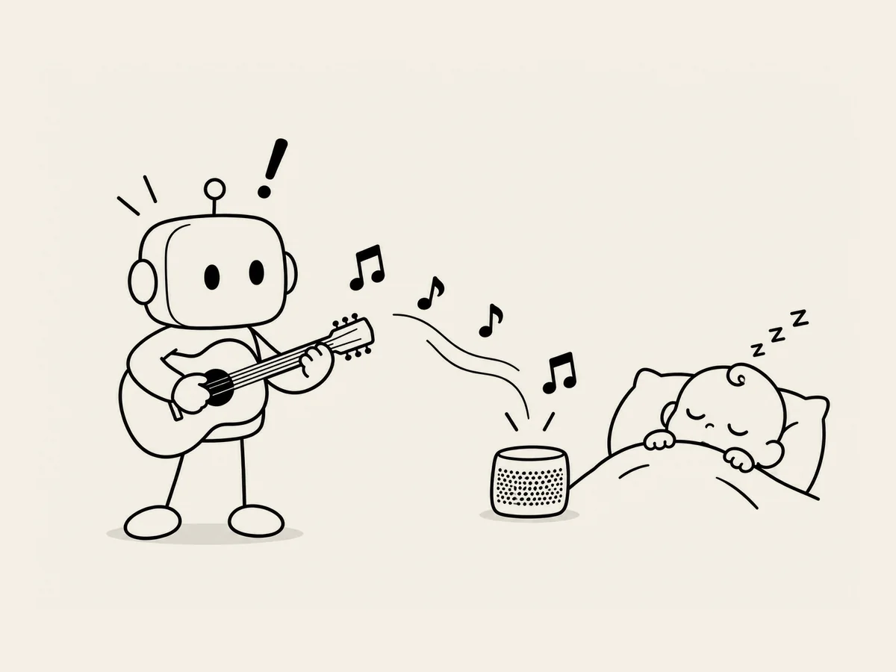

12.
A Lullaby Made by AI
The illustrations for the site were mostly done.
Now I needed lullabies.
Lullabies for babies to listen to as they fell asleep.
At first, I planned to buy them.
But once I started looking, I realized I didn't even know what kind of music would be best.
I asked AI.
"Find some famous lullabies from around the world."
It gave me several.
I listened to them one by one.
Hmm.
I didn't like them as much as I'd expected.
Some felt a little too elaborate for the site I was making,
and there was copyright to think about too.
So I asked again.
"What kind of lullaby actually helps babies fall asleep?"
AI explained a few things.
Quiet.
Repetitive.
Not too stimulating.
As I listened, a thought suddenly occurred to me.
Hang on.
"But can't you make music like that?"
Apparently, it could.
Huh?
"You can make lullabies?"
It could.
That got my attention.
"Then make one."
A little while later, the music came out.
I put on my earphones and listened.
Hmm.
A lullaby made by AI.
Let's see.
